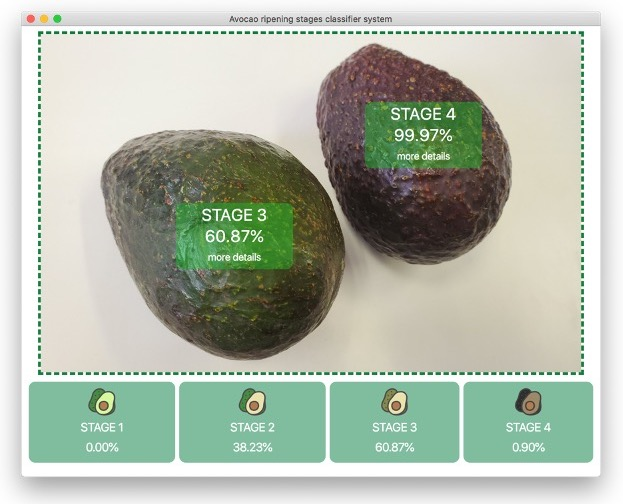
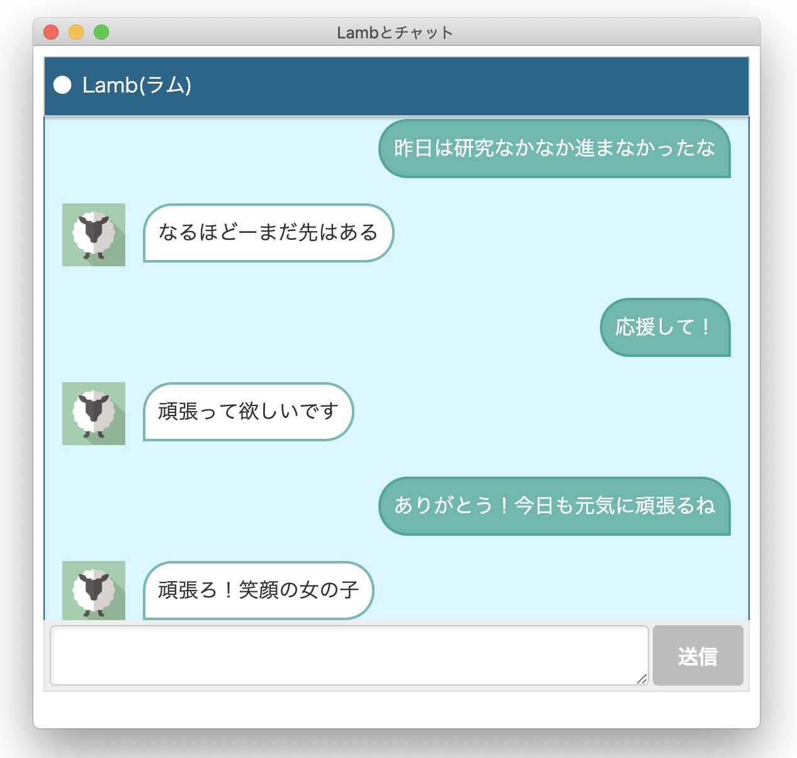
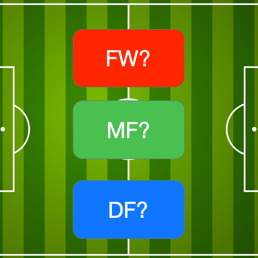

アボカドの食べ頃分類システム
学部4年生の頃から深層学習でアボカドの食べ頃の分類を行う研究を行っており、それの初めてのプロトタイプです！学習用データセットの作成から人工知能の開発までを行いました。アプリケーションのGUI化はPythonのeelライブラリを使用してHTML, CSS, JavaScriptで開発しました。

レッテル貼りチャットボット Lamb
初めてのグループ開発・研究を行った際に開発したシステムです。レッテル貼りを会話に含むチャットボットの開発を行いました。悪いイメージがありがちなレッテル貼りをどうにかチャットボットに組み込めないかなと試行錯誤したシステムです。システム名のLambはLabeling Amusement Botの略でレッテル貼りをして人を楽しませるという意味がこめられています。

サッカーゲームの能力値からポジションを予測する人工知能
講義で決定木について勉強した際にPythonのScikit-learnを使用して作成したプログラムです。選手の能力値だけでなく身長や利き足などでポジションの傾向があるという仮定をもとに実験などをしました。選手の能力値をまとめているWebサイトからスクレイピングを行ってデータを抽出し、その結果を決定木に学習させました。